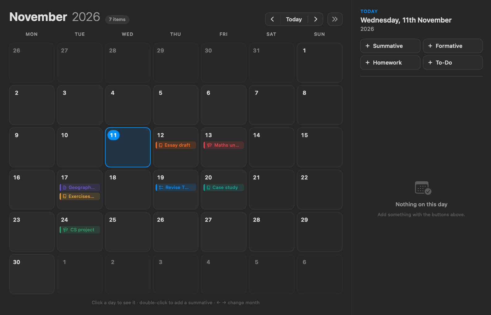

Your to-dos, homework, summatives and formatives in one place, with a calendar so nothing sneaks up on you.
Download for Mac
See every test and deadline by month, and add things straight onto a day.
Keep track of assessments, with starting and ending dates and optional times.
Colour-coded subjects so you can see at a glance what's due for which class.
Quick tasks with or without a date. Tick them off when they're done.
What's coming up in the next two weeks, today's to-dos and the next month's summatives.
Sign in with email or Google to back up your planner and use it on another Mac.
Why the warning? Study Planner is a small student-made app and isn't registered with Apple's paid developer program, so macOS can't check who made it. The app doesn't need any special permissions, and your planner is saved on your Mac (and in your account, if you sign in).